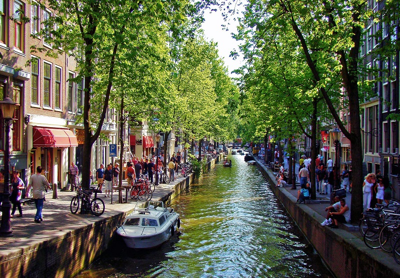
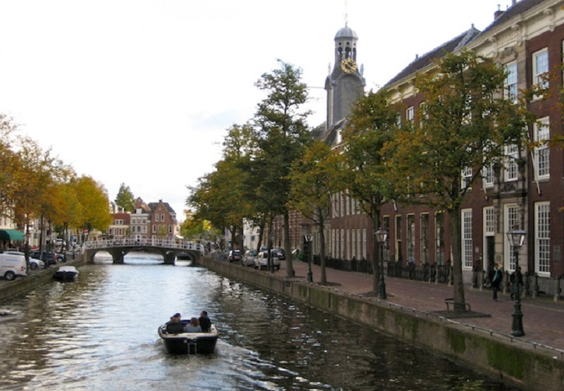
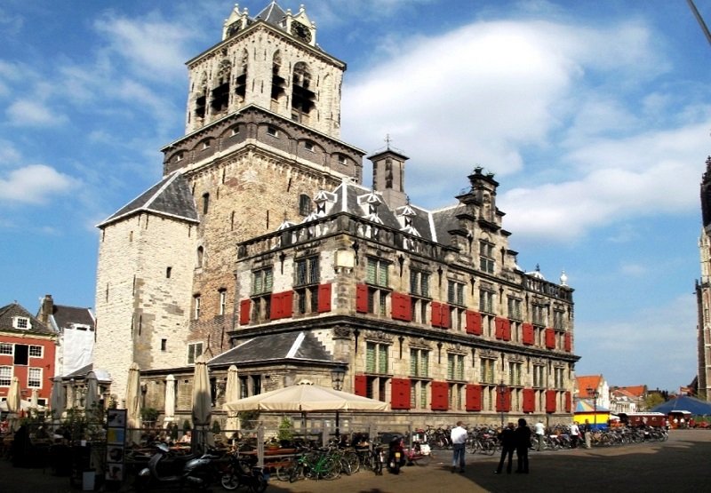

Краткая информация
Нидерланды, которые многие называют Голландией, известны во всем мире благодаря своим ветряным мельницам, каналам Амстердама, свободными нравами, а также тюльпанами. Но в этой стране, оказывается, есть еще и много пляжных курортов. Так, голландский город-курорт Зандвоорт, расположенный на побережье Северного моря, принимает туристов еще с 1828 года.
География Нидерландов
Королевство Нидерланды расположено в Северо-Западной Европе. На севере и западе Нидерланды омываются Северным морем. На юге эта страна граничит с Бельгией, а на востоке – с Германией. В состав Королевства Нидерланды также входят острова Бонайре, Саба, Синт-Эстатиус, Кюрасао, Аруба и Синт-Мартен в Карибском море. Общая площадь Нидерландов – 41 526 кв. км. , а длина европейской границы составляет 1 027 км.
Большую часть территории Нидерландов занимает низменность. Около 20% территории этой страны находится ниже уровня моря. Самая высокая точка Нидерландов – возвышенность Валсерберг (322 метра).
Столица
Столица Нидерландов - Амстердам, в котором сейчас проживают более 800 тыс. человек. Историки полагают, что город Амстердам был основан в XIII веке. Столицей Королевства Нидерланды Амстердам стал в 1814 году.
Климат и погода
Климат в Нидерландах умеренный морской с прохладным летом и мягкой зимой. В январе средняя температура воздуха составляет +2С, а в июле - +19С. В целом годовая средняя температура воздуха в этой стране – +9,6С. Среднегодовое количество осадков – 76,5 см.
Средняя температура воздуха в Нидерландах:
- январь - +2С
- февраль - +3С
- март - +6С
- апрель - +9С
- май - +13С
- июнь - +15,6С
- июль - +18С
- август - +18
- сентябрь - +14,5С
- октябрь - +11С
- ноябрь - +7С
- декабрь - +4С
Достопримечательности Нидерландов
Нидерланды знамениты своими достопримечательностями, самые лучшие из них:
Каналы Лейдена
Лейден является одним из самых старых городов Нидерландов. В этом городе родился Рембрандт. Лейден также знаменит своими каналами. 
Мэрия в Делфте
Здание мэрии в городе Делфт представляет собой прекрасное архитектурное произведение эпохи Ренессанса. Первоначально здание мэрии Делфта было спроектировано и построено голландским архитектором Хендриком де Кайзером, а в XX веке его восстановили по первоначальному проекту. 
Деревня Киндердейк
В районе деревни Киндердейк возле Роттердама находится большое количество старинных ветряных мельниц. 19 из них были построены еще в 1740 году, и сейчас они является популярным туристическим местом. Всего же в Нидерландах сейчас существует более 1 тысячи старых ветряных мельниц.